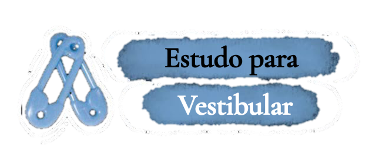
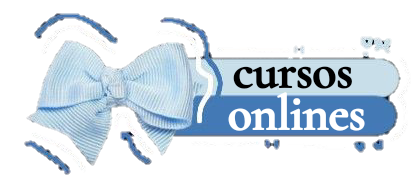

.png)

╰┈➤Aqui você encontra conteúdos de estudo para vestibular, enem, concurso, contas de estudos, sites, cursos gratuitos, dicas e muito mais! Explore e aprenda! ˎˊ˗
|
Os videos do Youtube ajudam a estudar de diversas formas, como os videos que
mostram experimentos e demonstrações praticas podem ajudar a visualizar conceitos em ações, videos curtos e
intuitivos podem ajudar a aprender conteudos rapidos de forma pratica, além de que o YouTube é perfeito para
você dar aquela reforçada em horas de lazer. Pois, nele tem videos que não precisa necessariamente estar
olhando para a tela, basta ouvi-los. 𓂃🖊
|
|  |
Se você está procurando dicas e estratégias para estudar de forma eficaz para o
vestibular, incluindo técnicas de organização, métodos de estudo e como manter a concentração, o site abaixo
pode te ajudar a adotar estratégias que permitam uma focagem eficiente e como evitar distrações. 𓂃🖊
|
|  |
Os cursos online são uma exelente maneira de adquirir conhecimento, desenvolver novas abilidades e até avançar no mercado de trabalho com flexibilidade, variedade de formatos e custo-benefício. Aqui você encontra cursos online de diversas áreas, tanto gratuitos quanto pagos para que você se adapta como puder. 𓂃🖊
|
|
Manter uma área de estudos e seu material organizados é essencial, e pode te ajudar de diversas formas, como na hora de revisar seu conteúdo para estudar para uma prova, além de ser um incentivo para manter o foco para muitos! As vezes pode ser complicado e você pode acabar ficar perdido enquanto tenta se organizar com as suas coisas, se você precisa de ajuda com isso entre no link abaixo e descubra novas formas de como se organizar, tanto com horários, cadernos e local de estudo!
|
|
Os cursos online são uma exelente maneira de adquirir conhecimento, desenvolver novas abilidades e até avançar no mercado de trabalho com flexibilidade, variedade de formatos e custo-benefício. Aqui você encontra cursos online de diversas áreas, tanto gratuitos quanto pagos para que você se adapta como puder. 𓂃🖊
|